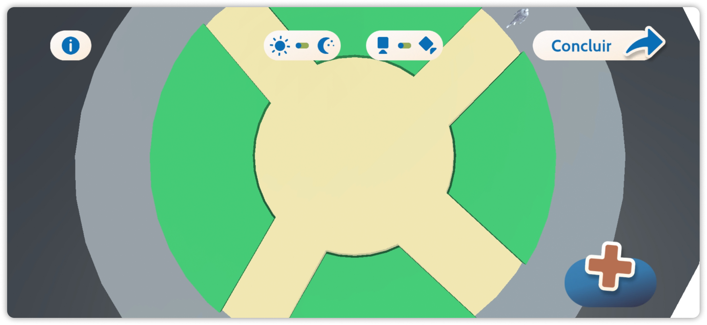

Praça
Praça
Um espaço público de permanência e convivência.
Urbanismo Tático X Ações para Transformar Cidades | Editora UFRJ, 2022

Uma praça é formada, principalmente, por:

Espaço


Objetos

Pessoas
O espaço e mobiliário precisam atender a necessidade das pessoas que frequentam uma praça.
Porém...
Será que os espaços atuais satisfazem os desejos de quem ali convive?

Se essa praça fosse sua,
ela continuaria igual?
De que maneira os espaços atuais atendem os desejos de quem ali convive?
rePraça é uma plataforma que possibilita a imaginação coletiva das praças por quem as conhece melhor: você.

É fácil começar a imaginar:
Escolha uma praça
Apenas a praça Barão de Corumbá está disponível no momento.
Mais opções serão adicionadas conforme o desenvolvimento.
Posicione o mobiliário

O SITE ESTÁ EM CONSTRUÇÃO!
Volte mais tarde, estamos preparando algo bem legal por aqui!
Gosta de planejar cidades?
Experimente destruí-las.
Em Arrasa Quarteirão você controla um monstro em fuga descontrolada, quebrando tudo pelas ruas onde passa. Corra, destrua e fuja!
Ver mais